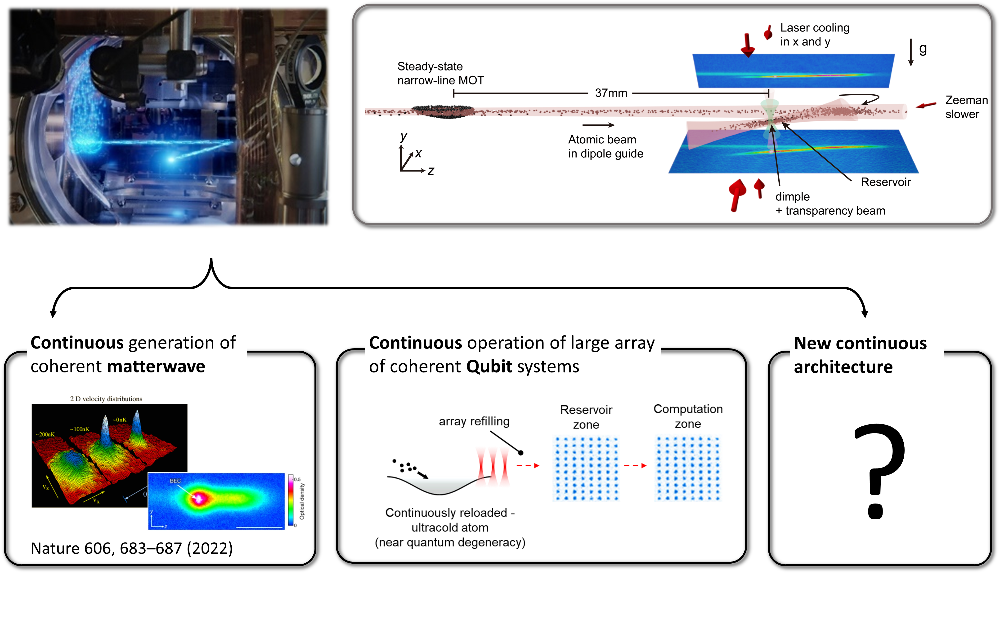

研究動機
雷射冷卻技術使得在微開爾文與次微開爾文溫度下進行精密的量子控制成為可能，從根本上改變了原子、分子與光學（AMO）物理。 傳統方法（例如都卜勒與次都卜勒冷卻）長期以來一直是製備量子氣體的關鍵。近年的冷卻創新更將能力擴展到先前難以觸及的物種與參數區域， 並促成了前沿應用：量子模擬［Greiner 等人］、計時［Chen & Ludlow（2024）、Chen & Katori（2025）］，以及透過擦除冷卻（erasure cooling）等技術推進的量子資訊［Endres 等人］。
我們的研究聚焦於利用超窄線寬光學鐘躍遷執行窄線寬雷射冷卻，並將這些技術整合至多工化（multiplexed）操作與多個囚禁站點的長時間相干控制。 此一整合對於發展大規模處理器架構，以及確保次世代量子技術中相干量子位元系統的連續運作至關重要。

首個連續式玻色–愛因斯坦凝聚 [Nature (2022)].